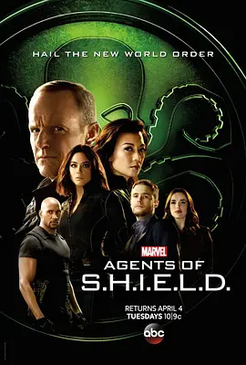

8.6
神盾局特工 第四季
Agents of S.H.I.E.L.D. Season 4
2016
美国
评分 8.6
导演:
比利·吉尔赫特
演员:
克拉克·格雷格 / 温明娜 / 汪可盈 / 伊恩·德·卡斯泰克 / 伊丽莎白·亨斯屈奇
类型:
剧情,动作,科幻
剧情简介
神盾局重新脱离地下隐匿后，科尔森与团队面临的局势比以往更为复杂。政府与舆论的双重压力要求组织更加透明，而超自然事件的频发却让“透明”成为危险的信号。在这种微妙的环境下，一股完全不同于以往威胁的新力量悄然靠近，它既非外星，也非科学所得，而是带着古老而深沉的力量闯入现代世界。团队在调查一连串诡秘案件时，发现每一次线索都引向一个关于“力量代价”的核心命题。梅在接触未知能量后行为出现异常，情绪与判断被悄悄扭曲；菲兹与西蒙斯虽在技术与科研上不断突破，却难以摆脱现实层面的压力与伦理冲突；斯凯在新的身份体系中寻找定位，逐渐理解能力背后更沉重的责任。随着调查深入，一个更具威胁性的对手浮现，牵动了现实、科技与超自然之间的所有缝隙。本季的冲突不再局限于外部敌人，而是延伸至团队内部的信任、道德与选择。神盾局在权力与秘密的边界上艰难维持平衡，而真正危险的，是那些看似微小却可能颠覆世界秩序的技术与力量。当局势不断叠加，他们不得不在光明与阴影之间找出唯一能让世界保持稳定的路径。